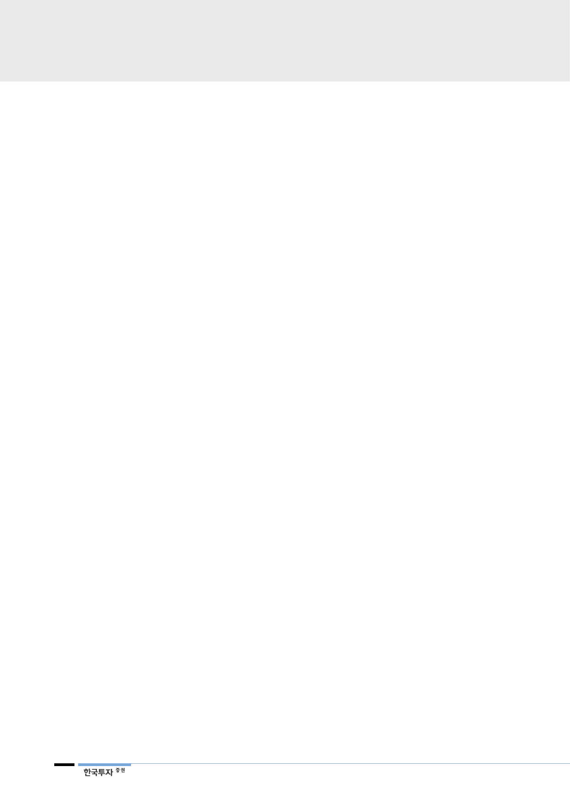

뇌전증은 새로운 치료제의
개발이 시급
블록버스터의 가능성을
엿보다
높은 안전성
뇌전증이란 뇌 특정 부위에 있는 신경세포의 비정상적인 활동으로 인해 흥분, 경
련, 발작이 반복적으로 발생하여 만성화된 질환을 의미한다. 뇌전증은 발작이 만
성화될 경우 뇌 손상은 물론이고 신체적, 정신적 장애를 초래한다. 뇌전증 유병률
은 전체 인구의 0.5%, 200명당 1명꼴로 WHO에서는 뇌전증 환자가 전 세계적
으로 약 5,000만명 이상 존재하는 것으로 추산한다. 미국 CDC(Centers for
Disease Control and Prevention, 질병통제예방센터)에 따르면 미국 내 뇌전증
환자 수는 350만명에 달하는 것으로 나타났다. 뇌전증 전체 환자 중 30~40%는
1-3차 치료제와 추가적인 약물까지 복용하고도 치료되지 않은 난치성 환자로 알
려져 있다. 또한 현재 판매되고 있는 대표 약물의 난치성 환자 치료율은 50%에
그치는 실정으로 새로운 치료제에 대한 수요가 높은 상황이다. 세노바메이트는
기존 뇌전증 치료제에 반응하지 않는 난치성 환자를 대상으로 개발되었기 때문에
시장의 unmet needs(미충족 수요)를 만족시킬 수 있을 전망이다.
세노바메이트는 뇌에서 흥분 신호를 전달하는 나트륨(Na+) 채널의 나트륨 이온
전류(persistent sodium current, INap)를 차단함과 동시에 억제성 신호전달에
관여하는 GABA-A 수용체의 알로스테릭을 활성화하여 신경세포의 신경전달 과
정을 정상으로 조절하는 것으로 파악된다. 뇌전증의 원인이 되는 흥분성/억제성
신호전달과 관련된 두 가지 타깃을 동시에 조절해 신경세포의 흥분/억제 균형을
정상화하는 방식이다. 세노바메이트는 2008년부터 건강인을 대상으로 임상 1상
을 완료한 후 2015년 뇌전증 환자 대상으로 임상 2상을 마치고 2018년 임상 3
상을 완료했다. 임상 3상은 전 세계 17개국, 125개 사이트에서 환자 1,348명을
대상으로 진행했다. 지난 2016년 FDA가 세노바메이트의 임상 2상 효능을 인정
함에 따라 임상 3상에서는 안전성과 약물동력학만 평가만으로 NDA 신청이 가능
했다. 뇌전증 치료제는 전세계적으로 UCB제약의 빔팻(Vimpat, 성분명:
lacosamide)이 시장을 선도하고 있다. 임상 2상에서 세노바메이트는 플라시보와
빔팻 대비 발작 빈도수 감소율이 높아 뛰어난 효능을 나타내면서 블록버스터의
가능성을 보여줬다.
한편 세노바메이트는 안전성도 뛰어난 것으로 밝혀졌다. 임상 3상에서 가장 집중
된 부분은 안전성으로 대부분의 뇌전증 약물 복용시에 발생하는 DRESS 증후군
(Drug rash with eosinophilia and systemic symptoms syndrome)의 발생 여
부였다. DRESS 증후군은 뇌전증 치료제의 흔한 부작용으로 일종의 약물 알레르
기로 심각한 발진뿐 아니라 급성간염, 신부전을 일으켜 사망에 이를 수 있는 심각
한 질환이다. 임상 3상에서는 총 1,348명의 환자를 모집했는데 그중 1,037명이
28주간 세노바메이트를 복용했으며 273명은 임상 도중 치료를 중단했다. 114명
(8.5%)에서 입원치료가 필요한 경련을 포함하는 부작용이 관찰됐으며 가장 흔한
부작용은 졸음, 어지럼증, 피로였다. DRESS 증후군은 한 건도 관찰되지 않았다.
임상 2상에서는 세 건이 발견되었으나 감소된 첫 시작 용량과 2주라는 용량 적정
기간이 DRESS 증후군 발병을 줄일 수 있었다.
8